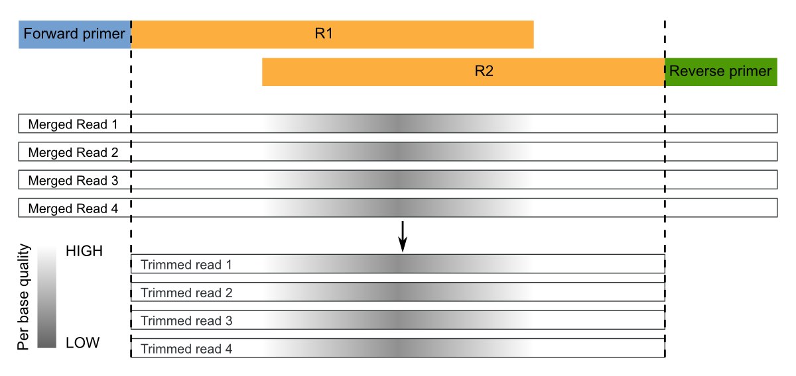

Paired-end sequencing¶
This tutorial describes a standard micca pipeline for the analysis of overlapping paired-end Illumina data. This pipeline is intended for different platforms, such as Illumina MiSeq and Illumina HiSeq. Although this tutorial explains how to apply the pipeline to 16S rRNA amplicons, it can be adapted to others markers gene/spacers, e.g. Internal Transcribed Spacer (ITS) or 28S.
Table of Contents
Dataset download¶
This paired-end 16S rRNA dataset contains 3 samples in FASTQ format (V3-V4 region, 341-Forward 5’-CCTACGGGNGGCWGCAG-3’, 805-Reverse 5’-GACTACNVGGGTWTCTAATCC-3’). The 300-bp paired-end sequencing was carried out on an Illumina MiSeq.
Open a terminal, download the data and prepare the working directory:
wget ftp://ftp.fmach.it/metagenomics/micca/examples/pairedend.tar.gz
tar -zxvf pairedend.tar.gz
cd pairedend
Merge paired-end sequences¶
Now the paired sequences must be merged to obtain consensus sequences
(sometimes called assembly). This operation can be performed with
the mergepairs command. After the merging of the
paired reads, the mergepairs command merges the
different samples in a single file where sample names are appended to
the sequence identifier, as in merge and
split. Passing the forward files only reverse file
names will be constructed by replacing the string _R1 in the
forward file name with _R2 (typical in Illumina file names, see
options -p/--pattern and -e/--repl).
Since the sequenced region is about of 464-bp (805-341) and the reads are of 300-bp, the overlap region is quite large (~136 bp), so we set a minimum overlap length of 100 and maximum number of allowed mismatches of 32:
micca mergepairs -i fastq/*_R1*.fastq -o merged.fastq -l 100 -d 32
Note
mergepairs works with FASTQ files only.
Primer trimming¶
Segments which match PCR primers should be now removed. For Illumina paired-end (already merged) reads, we recommend to trim both forward and reverse primers and discard reads that do not contain the forward OR the reverse primer. Moreover, sequence preceding (for the forward) or succeding (for the reverse) primers should be removed:
These operations can be performed with the trim command:
micca trim -i merged.fastq -o trimmed.fastq -w CCTACGGGNGGCWGCAG -r GACTACNVGGGTWTCTAATCC -W -R -c
The option -W/--duforward and -R/--dureverse ensures that
reads that do not contain the forward or the reverse primer will be
discarded. With the option -c/--searchrc the command searches
reverse complement primers too.
Quality filtering¶
Producing high-quality OTUs requires high-quality reads. filter filters sequences according to the maximum allowed expected error (EE) rate % (see Quality filtering strategy in micca). We recommend values <=1%.
For paired-end reads, we recommend to merge pairs first, then quality filter using a maximum EE threshold with no length truncation.
Warning
Parameters for the filter command should be chosen using the tool filterstats.
Choosing parameters for filtering¶
The command filterstats reports the fraction of reads that would pass for each specified maximum expected error (EE) rate %:
micca filterstats -i trimmed.fastq -o filterstats
Open the PNG file filterstats/stats_plot.png:
In this case we are interested in the plot on top (minimum length
filtering only). A truncation length of 400 and a maximum error
rate of 0.5% seems to be a good compromise between the expected
error rate and the number of reads remaining. Inspecting the file
filterstats/minlen_stats.txt, you can see that more than 73%
reads will pass the filter:
L 0.25 0.5 0.75 1.0 1.25 1.5
...
399 54.801 73.016 83.476 90.107 94.312 96.917
400 54.799 73.013 83.473 90.104 94.309 96.914
401 54.781 72.993 83.452 90.080 94.285 96.890
...
Note
To obtain general sequencing statistics, run stats.
Filter sequences¶
Now we can run the filter command with the selected parameters:
micca filter -i trimmed.fastq -o filtered.fasta -e 0.5 -m 400
Note
The maximum number of allowed Ns after truncation can be also specified in filterstats and in filter.